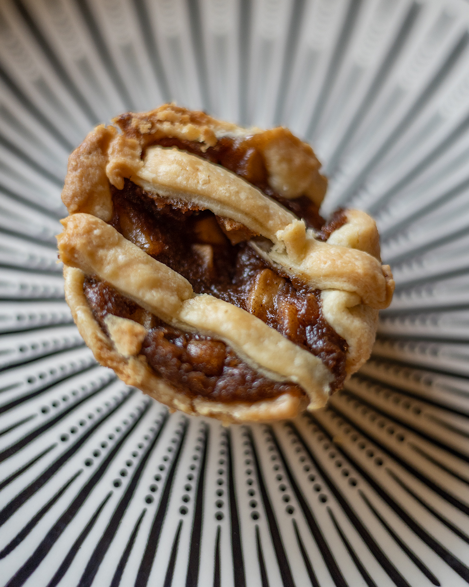
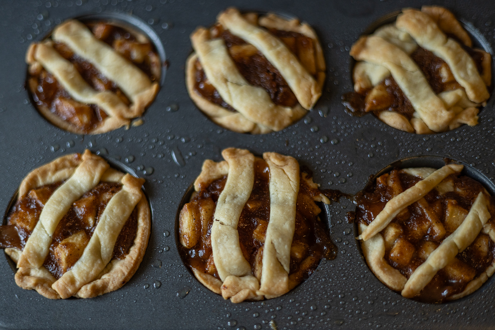
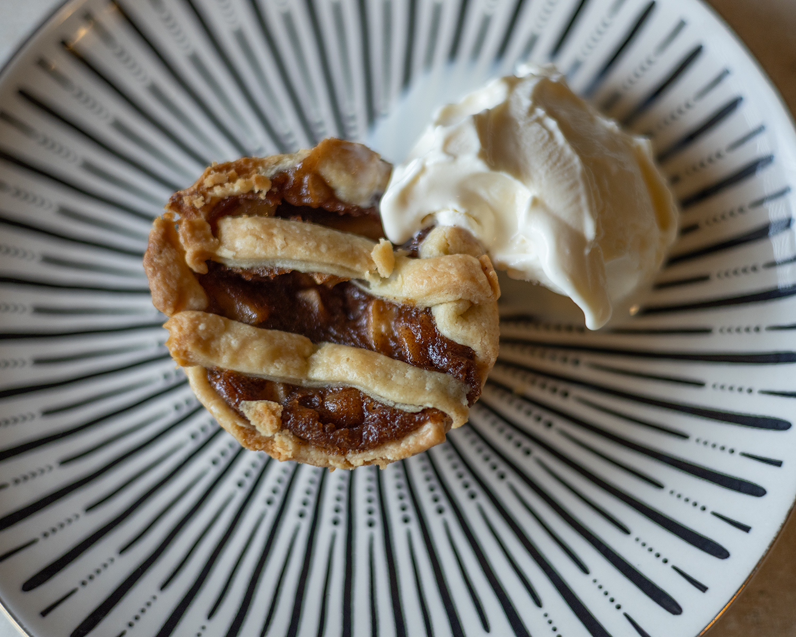

Apple Cups


Apple pie is delicious in every season and at any size. I make these little guys when I am hosting a party or if I cdon't want to store a whole pie in my fridge. Bonus is, they bake quicker and allow for more controlled portioning. Or a better ratio of pie to ice cream, depending on your priorties.
Ingredients
- 2 large apples
- 1/3 cup brown sugar
- 1 tbsp cinnamon
- 1/2 tsp nutmeg
- 1/4 cup butter
- 3 tbsp flour
- Frozen pie crusts, thawed
Instructions
- Preheat oven to 375°F (190°C). Wash, peel and dice your apples into half inch pieces. I chose cosmmic crisp for some tart sweetness, but use whatever apple you prefer.
- In a small saucepan, melt the butter and stir in the brown sugar, cinnamon and nutmeg. Then add the apples and cook on low for about 5 minutes. Add flour, incorperate well and cook an addtional 2 minutes before setting aside.
- Cut the premade pie crust into roughly 9 pieces. Use them to line a muffin tin, pinching the edges of the crust so the filling doesn't leak out.
- Fill each cup with the apple mixture and bake for 20-25 minutes, or until the crust is golden brown.
- Allow to cool before removing from the muffin tin.
- Enjoy! I highly recommend serving a scoop of vanilla ice cream on top.
